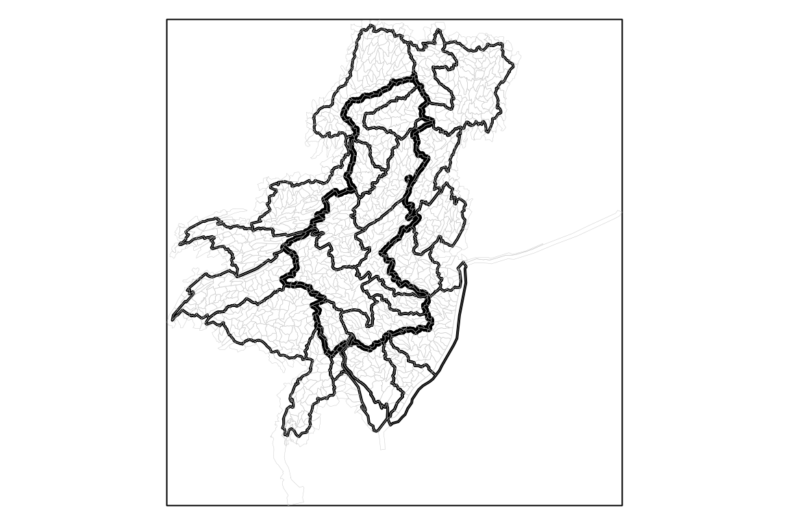

vignettes/polygon_intersection.Rmd
polygon_intersection.RmdThis article demonstrates how to create area weights for two sets of polygons.
It
is a comparison with the gdptools python package
demonstration here.
See calculate_area_intersection_weights() for additional
demonstration and info.
gdptools_weights <- read.csv(system.file("extdata/gdptools_prl_out.csv", package = "ncdfgeom"),
colClasses = c("character", "character", "numeric"))
gdptools_weights <- dplyr::rename(gdptools_weights, gdptools_wght = wght)
gage_id <- "USGS-01482100"
basin <- nhdplusTools::get_nldi_basin(list(featureSource = "nwissite", featureId = gage_id))
huc08 <- nhdplusTools::get_huc(id = na.omit(unique(gdptools_weights$huc8)), type = "huc08")
#> Spherical geometry (s2) switched off
#> Spherical geometry (s2) switched on
huc12 <- nhdplusTools::get_huc(id = na.omit(unique(gdptools_weights$huc12)), type = "huc12")
#> Spherical geometry (s2) switched off
#> Spherical geometry (s2) switched on
org_par <- par(mar = c(0, 0, 0, 0))
plot(sf::st_as_sfc(sf::st_bbox(huc12)))
plot(sf::st_geometry(basin), lwd = 4, add = TRUE)
plot(sf::st_simplify(sf::st_geometry(huc08), dTolerance = 500), add = TRUE, lwd = 2)
plot(sf::st_simplify(sf::st_geometry(huc12), dTolerance = 500), add = TRUE, lwd = 0.2, border = "grey")
par(org_par)
weights <- ncdfgeom::calculate_area_intersection_weights(
x = sf::st_transform(dplyr::select(huc12, huc12), 6931),
y = sf::st_transform(dplyr::select(huc08, huc8), 6931),
normalize = TRUE
)
#> Loading required namespace: areal
weights <- dplyr::left_join(weights, gdptools_weights, by = c("huc8", "huc12"))With weights calculated, we can do a little investigation into the differences.
weights$diff <- weights$w - weights$w
# make sure nothing is way out of whack
max(weights$diff, na.rm = TRUE)
#> [1] 0
# ensure the weights generally sum as we would expect.
sum(weights$gdptools_wght, na.rm = TRUE)
#> [1] 24.99911
sum(weights$w, na.rm = TRUE)
#> [1] 25
length(unique(na.omit(weights$huc8)))
#> [1] 25
# see how many NA values we have in each.
sum(is.na(weights$w))
#> [1] 1
sum(is.na(weights$gdptools_wght))
#> [1] 14
# look at cases where gptools has NA and ncdfgeom does not
weights[is.na(weights$gdptools_wght),]
#> # A tibble: 14 × 5
#> huc12 huc8 w gdptools_wght diff
#> <chr> <chr> <dbl> <dbl> <dbl>
#> 1 020402040000 02040302 0 NA 0
#> 2 020403010800 02040302 0 NA 0
#> 3 020402050801 02040204 0 NA 0
#> 4 020402050802 02040204 0 NA 0
#> 5 020402050803 02040204 0 NA 0
#> 6 020402060106 02040204 0 NA 0
#> 7 020402060603 02040204 0 NA 0
#> 8 020402060604 02040204 0 NA 0
#> 9 020402060605 02040204 0 NA 0
#> 10 020402060702 02040204 0 NA 0
#> 11 020402060703 02040204 0 NA 0
#> 12 020402070103 02040204 0 NA 0
#> 13 020600010000 02060002 0 NA 0
#> 14 020600030104 NA NA NA NA